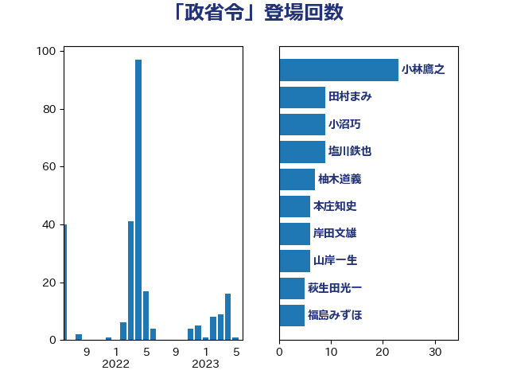

単語「政省令」

| 井上信治 | 自由民主党 | 46 回 |
| 小林鷹之 | 自由民主党 | 23 回 |
| 柚木道義 | 立憲民主党 | 18 回 |
| 伊藤孝恵 | 国民民主党 | 10 回 |
| 川田龍平 | 立憲民主党 | 10 回 |
| 塩川鉄也 | 日本共産党 | 9 回 |
| 小沼巧 | 立憲民主党 | 8 回 |
| 古屋範子 | 公明党 | 7 回 |
| 山岸一生 | 立憲民主党 | 6 回 |
| 本庄知史 | 立憲民主党 | 6 回 |
| 田村まみ | 国民民主党 | 6 回 |
| 山井和則 | 立憲民主党 | 5 回 |
| 岸田文雄 | 自由民主党 | 5 回 |
| 福島みずほ | 社会民主党 | 5 回 |
| 萩生田光一 | 自由民主党 | 5 回 |
| 杉尾秀哉 | 立憲民主党 | 4 回 |
| 柳ヶ瀬裕文 | 日本維新の会 | 4 回 |
| 田村憲久 | 自由民主党 | 4 回 |
| 田村智子 | 日本共産党 | 4 回 |
| 石川大我 | 立憲民主党 | 4 回 |
| 進藤金日子 | 自由民主党 | 4 回 |
| 門山宏哲 | 自由民主党 | 4 回 |
| 岡田克也 | 立憲民主党 | 3 回 |
| 岸真紀子 | 立憲民主党 | 3 回 |
| 河野太郎 | 自由民主党 | 3 回 |
| 浅野哲 | 国民民主党 | 3 回 |
| 神谷裕 | 立憲民主党 | 3 回 |
| 麻生太郎 | 自由民主党 | 3 回 |
| 中西祐介 | 自由民主党 | 2 回 |
| 伊藤孝江 | 公明党 | 2 回 |
| 國重徹 | 公明党 | 2 回 |
| 城井崇 | 立憲民主党 | 2 回 |
| 小山展弘 | 立憲民主党 | 2 回 |
| 後藤祐一 | 立憲民主党 | 2 回 |
| 河野義博 | 公明党 | 2 回 |
| 熊田裕通 | 自由民主党 | 2 回 |
| 牧島かれん | 自由民主党 | 2 回 |
| 石橋通宏 | 立憲民主党 | 2 回 |
| 秋野公造 | 公明党 | 2 回 |
| 笠井亮 | 日本共産党 | 2 回 |
| 舟山康江 | 国民民主党 | 2 回 |
| ながえ孝子 | 無所属 | 1 回 |
| 串田誠一 | 日本維新の会 | 1 回 |
| 佐藤公治 | 立憲民主党 | 1 回 |
| 加田裕之 | 自由民主党 | 1 回 |
| 吉川沙織 | 立憲民主党 | 1 回 |
| 塩村あやか | 立憲民主党 | 1 回 |
| 大塚耕平 | 国民民主党 | 1 回 |
| 大河原まさこ | 立憲民主党 | 1 回 |
| 大西健介 | 立憲民主党 | 1 回 |
| 安江伸夫 | 公明党 | 1 回 |
| 山下貴司 | 自由民主党 | 1 回 |
| 山口壯 | 自由民主党 | 1 回 |
| 平井卓也 | 自由民主党 | 1 回 |
| 後藤茂之 | 自由民主党 | 1 回 |
| 斉藤鉄夫 | 公明党 | 1 回 |
| 松下新平 | 自由民主党 | 1 回 |
| 梶山弘志 | 自由民主党 | 1 回 |
| 森屋隆 | 立憲民主党 | 1 回 |
| 森山浩行 | 立憲民主党 | 1 回 |
| 武村展英 | 自由民主党 | 1 回 |
| 浅川義治 | 日本維新の会 | 1 回 |
| 清水貴之 | 日本維新の会 | 1 回 |
| 礒崎哲史 | 国民民主党 | 1 回 |
| 神津たけし | 立憲民主党 | 1 回 |
| 福島伸享 | 無所属 | 1 回 |
| 緒方林太郎 | 無所属 | 1 回 |
| 藤木眞也 | 自由民主党 | 1 回 |
| 西村康稔 | 自由民主党 | 1 回 |
| 西村智奈美 | 立憲民主党 | 1 回 |
| 道下大樹 | 立憲民主党 | 1 回 |
| 野上浩太郎 | 自由民主党 | 1 回 |
| 野田国義 | 立憲民主党 | 1 回 |
| 野田聖子 | 自由民主党 | 1 回 |
| 金子恵美 | 立憲民主党 | 1 回 |
| 青山繁晴 | 自由民主党 | 1 回 |